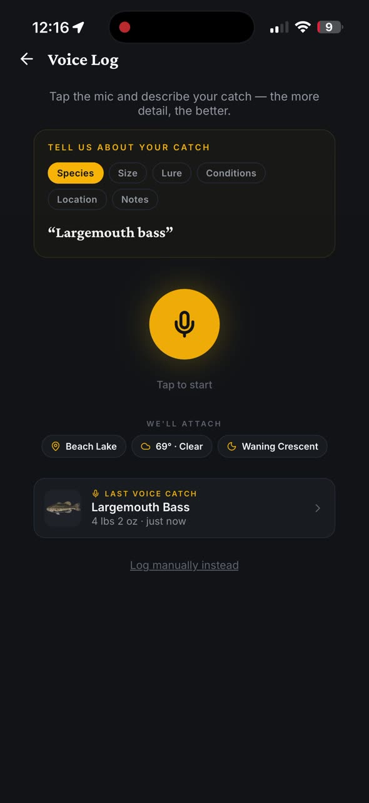
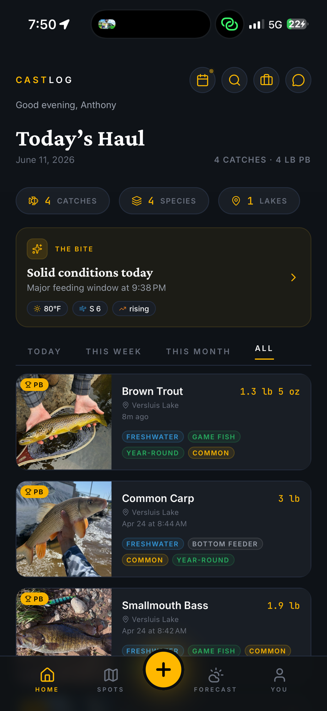
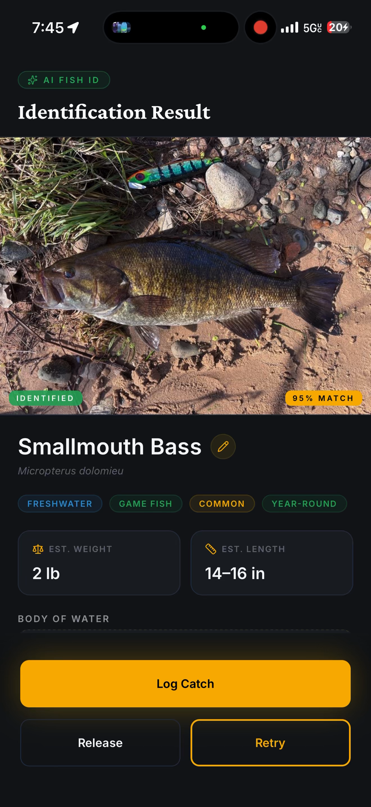

Voice logging · Logs a catch in seconds
The fishing journal
you'll actually keep.
Not the app that charged you to read what you already logged.
Built for wet hands and flopping fish. Just say what you caught. CastLog logs the rest in seconds. No taps, no typing, no dry hands required.
Say “3-pound largemouth on a spinnerbait.” CastLog logs species, weight, bait, GPS and conditions in seconds, even with no signal.
Anglers in 32 states and 17 countries
Private by default
Works offline
Free export
iOS
Android


